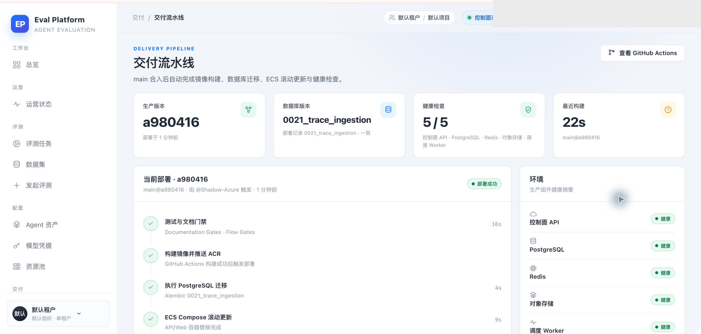

- 功能 PR
- #173
- 生产提交
- a9804164eda1209b61a5773244985fc1d19048a1
- Deploy run
- 43120745433 · success
- 数据库版本
- 0021_trace_ingestion
- Secrets 核验
- 只核验名称存在，未读取或记录任何值
- 写入策略
- SHA-256 完整性校验 + 目标目录暂存 + 0600 原子 rename
M7-116 · DEPLOYMENT SECRETS
生产密钥注入与换机迁移 Smoke 报告
GitHub Secrets 注入、宿主机摘要一致性检查、原子 .env 替换、数据库迁移、ECS 滚动更新和部署页面健康检查均通过；未发现未解决缺陷。
7/7长期 Secret 名称
27/27部署行为/契约测试
5/5生产健康检查
0未解决缺陷
Environment and Artifact
2026-11-12 · macOS Chrome + 生产 ECSScenario Matrix
7 pass| # | 场景 | 结果 | 说明 | 证据 |
|---|---|---|---|---|
| 01 | Secrets 名称完整性 | PASS | SECRET_BOX_KEY、POSTGRES_PASSWORD、AUTH_SESSION_SECRET、GATEWAY_TOKEN_SECRET、RUNNER_TASK_SECRET、RUNNER_HEARTBEAT_TOKEN、RUNNER_ADMIN_TOKEN 均存在。 | GitHub Secrets name list deploy workflow contract |
| 02 | 现有主机摘要一致性 | PASS | Deploy 在覆盖 .env 前通过 SHA-256 比较成功；不一致会在写入前终止。 | Deploy run 43120745433 Write object-store, dispatch and long-lived credentials |
| 03 | 空模板与部分密钥边界 | PASS | 无 .env、空模板、仅未受管键均可初始化；部分长期密钥存在时安全拒绝。 | managed-env-writer 9 tests deploy-contract 18 tests |
| 04 | 截断与原子替换 | PASS | 截断或摘要错误不替换旧 env；成功路径保留未受管键并保持 0600。 | deploy/write-managed-env.sh managed-env-writer behavior tests |
| 05 | api/worker 环境矩阵 | PASS | api/worker 均获得所需长期密钥；database URL 强制使用 POSTGRES_PASSWORD。 | docker-compose.prod.yml deployment contract |
| 06 | 自动部署与迁移 | PASS | 镜像构建、PostgreSQL 迁移、ECS 滚动更新和健康检查完成。 | Deploy run 43120745433 |
| 07 | 生产 GUI 健康状态 | PASS | 生产版本 a980416，数据库版本一致，API/PostgreSQL/Redis/对象存储/Worker 5/5 健康。 | 01-deployment-success-redacted.jpeg |
Issues and Observations
No defects foundNo defects were found.
Evidence
1 screenshots
Automated Coverage Assessment
4 areas reviewed| 范围 | 自动化 | 结论 | 后续建议 |
|---|---|---|---|
Conclusion
可以合并并换机复现部署密钥已从 GitHub Secrets 可复现注入，现有主机值在覆盖前完成摘要校验，主机 .env 原子替换，生产部署与健康检查通过。
- 长期密钥值未在报告、日志、argv 或截图中暴露。
- 当前生产 .env 与 Secrets 的摘要比较在真实 Deploy 中成功。
- 主动轮换仍应按独立 runbook 处理历史密文迁移。
AI Eval Platform · M7-116 deployment smoke · evidence generated from Computer Use and GitHub Actions